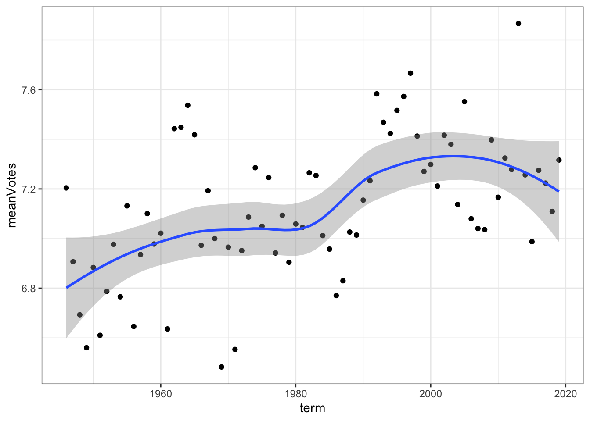
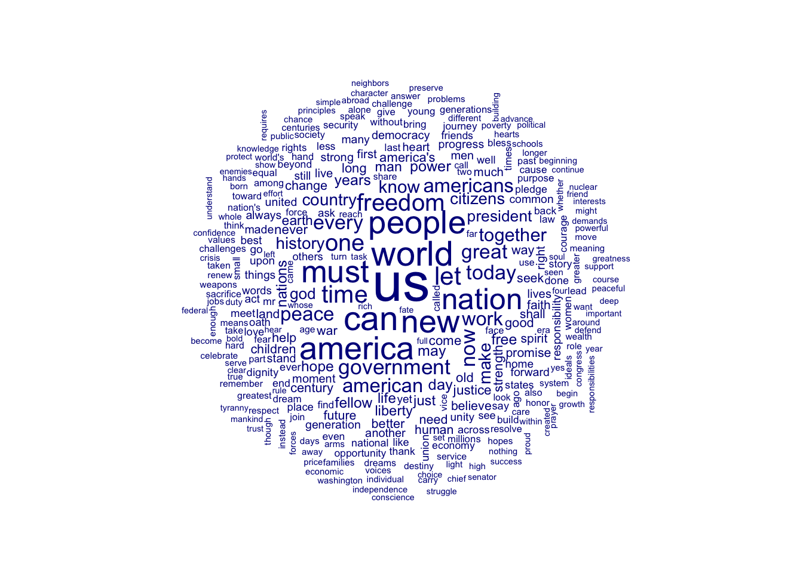

x <- 5
x + 10[1] 15In this tutorial, you’ll learn about working in R, how to get your R workspace set up, how to do some basic work with data in R, and we’ll introduce a quick version of some (pretty though not necessarily useful) text analysis.
By the end of this tutorial, you should be familiar with the following:
1. Load packages: install.packages(), library()
2. Working directories: getwd(), setwd()
3. Read in some data: read.csv()
4. Look at data: str(), head(), tail()
5. Piping: %>%
6. Manipulate data: group_by, summarise()
Each week, the tutorial will include all of the code to demonstrate some of the fundamental aspects of the work we are doing. The tutorials on the website include R code and output. If you would like to execute & edit the code, please download the .qmd file from Google Classroom, and execute & edit the code in RStudio.
You’ll do code inside of cells that look like this:
You can run the code inside the cell by hitting the play button in the upper righthand side of the cell. When the code is running, you’ll notice that the play button transforms, indicating that the operation is being performed.
R itself has a base set of pre-programmed functions and operations that are included as soon as you open the program up. However, the real magic of R is in the user-contributed packages, which are all freely available online and easy --- generally speaking --- to add on to the base functionality. You can think of these as like the apps you add to your smart phone. While you can do a lot with your smart phone without doing anything, those apps provide a world of different ways of employing your phone. For R, packages serve the same purpose. When you start R up, then, you need to get the packages loaded. If you have never installed the packages before, you need to do that first:
(since I have these packages already, I put a # mark in front of the code to stop it from running. If you don’t have these packages, make sure you delete the # mark before running the code.)
Once the packages are installed, you can load them as follows:
Package version: 3.3.1
Unicode version: 14.0
ICU version: 70.1Parallel computing: 4 of 4 threads used.See https://quanteda.io for tutorials and examples.Occasionally, you’ll see conflicts between packages, and notes about a function in one program being masked from another program. For now, don’t worry about this. It arises because different programs will have similar functions with the same name. To return to the metaphor of the phone: it’s a bit like you may have multiple web browsers and you can choose from any of them to surf the web when, say, you click a link from a friend. There are some dangers associated with this, as some of those functions may be named the same thing but may actually do something slightly different. Again, though, this is a topic for another day.
Directories are the folders on a computer. Just as you navigate to different folders when you are looking for that ever elusive file that you can’t remember where you saved, you need to tell R where on your computer to look for data or other files. For new programmers, not understanding working directories (or the directory that R is currently working in) is one of the primary time sucks and sources of frustration. You can set the working directory using the drop down menu. You can also always check your working directory by entering getwd() (i.e., “get working directory”), and can change the working directory using setwd(). The latter requires that you enter the specific address of the folder on your machine (so, something like “~” on a Mac, or “c:” on a PC).
Each tutorial will be designed to work with a dataset that I provide and link to. At the most basic level, many packages include datasets as illustrative examples that we can pull on to explore the basics of that package. However, the code that we cover should — generally speaking — work with the data that you aim to work with this semester.
We’ll spend a lot of time during the Web Scraping week discussing the import of text data into R. For now, our focus will just be on getting a dataset into R that we can try out a few basic exploratory functions with. To do that, we can call down data directly from the web as so:
# set up temporary file
temp <- tempfile()
# download file and store it in the temporary file
download.file("http://scdb.wustl.edu/_brickFiles/2020_01/SCDB_2020_01_caseCentered_Citation.csv.zip", temp)
# the file is compressed, so we need to unzip it first
data <- read.csv(unz(temp, "SCDB_2020_01_caseCentered_Citation.csv"))
# if that all works, then you can check the number of observations or the number of rows by
nrow(data)[1] 9030Once the data is in, we can start to work with it. There’s really no limit on us from this point on. In the code chunk below, we’ll cover a few of the basics. Now that we are working with data, we’ll load the tidyverse. The tidyverse describes itself as “an opinionated collection of R packages designed for data science.” That’s about right; the packages are designed to improve on the base functionality of R in order to provide a better experience in working with data, conducting analyses, and creating visualizations. (make sure to install tidyverse if you haven’t done so.)
── Attaching packages ─────────────────────────────────────── tidyverse 1.3.2 ──
✔ ggplot2 3.4.2 ✔ purrr 1.0.1
✔ tibble 3.2.1 ✔ dplyr 1.1.1
✔ tidyr 1.3.0 ✔ stringr 1.5.0
✔ readr 2.1.3 ✔ forcats 1.0.0
── Conflicts ────────────────────────────────────────── tidyverse_conflicts() ──
✖ dplyr::filter() masks stats::filter()
✖ dplyr::lag() masks stats::lag()# convert to tibble, the tidyverse dataframe format
data <- as_tibble(data)
# inspect the data
str(data)tibble [9,030 × 53] (S3: tbl_df/tbl/data.frame)
$ caseId : chr [1:9030] "1946-001" "1946-002" "1946-003" "1946-004" ...
$ docketId : chr [1:9030] "1946-001-01" "1946-002-01" "1946-003-01" "1946-004-01" ...
$ caseIssuesId : chr [1:9030] "1946-001-01-01" "1946-002-01-01" "1946-003-01-01" "1946-004-01-01" ...
$ voteId : chr [1:9030] "1946-001-01-01-01" "1946-002-01-01-01" "1946-003-01-01-01" "1946-004-01-01-01" ...
$ dateDecision : chr [1:9030] "11/18/1946" "11/18/1946" "11/18/1946" "11/25/1946" ...
$ decisionType : int [1:9030] 1 1 1 7 1 1 1 1 1 1 ...
$ usCite : chr [1:9030] "329 U.S. 1" "329 U.S. 14" "329 U.S. 29" "329 U.S. 40" ...
$ sctCite : chr [1:9030] "67 S. Ct. 6" "67 S. Ct. 13" "67 S. Ct. 1" "67 S. Ct. 167" ...
$ ledCite : chr [1:9030] "91 L. Ed. 3" "91 L. Ed. 12" "91 L. Ed. 22" "91 L. Ed. 29" ...
$ lexisCite : chr [1:9030] "1946 U.S. LEXIS 1724" "1946 U.S. LEXIS 1725" "1946 U.S. LEXIS 3037" "1946 U.S. LEXIS 1696" ...
$ term : int [1:9030] 1946 1946 1946 1946 1946 1946 1946 1946 1946 1946 ...
$ naturalCourt : int [1:9030] 1301 1301 1301 1301 1301 1301 1301 1301 1301 1301 ...
$ chief : chr [1:9030] "Vinson" "Vinson" "Vinson" "Vinson" ...
$ docket : chr [1:9030] "24" "12" "21" "26" ...
$ caseName : chr [1:9030] "HALLIBURTON OIL WELL CEMENTING CO. v. WALKER et al., DOING BUSINESS AS DEPTHOGRAPH CO." "CLEVELAND v. UNITED STATES" "CHAMPLIN REFINING CO. v. UNITED STATES ET AL." "UNITED STATES v. ALCEA BAND OF TILLAMOOKS ET AL." ...
$ dateArgument : chr [1:9030] "1/9/1946" "10/10/1945" "11/8/1945" "1/31/1946" ...
$ dateRearg : chr [1:9030] "10/23/1946" "10/17/1946" "10/18/1946" "10/25/1946" ...
$ petitioner : int [1:9030] 198 100 209 27 27 198 148 189 4 135 ...
$ petitionerState : int [1:9030] NA NA NA NA NA NA NA NA 2 NA ...
$ respondent : int [1:9030] 172 27 27 170 176 4 405 189 248 114 ...
$ respondentState : int [1:9030] NA NA NA NA NA 6 NA NA NA NA ...
$ jurisdiction : int [1:9030] 6 1 2 1 1 2 1 1 1 1 ...
$ adminAction : int [1:9030] NA NA 66 67 NA 117 105 24 117 NA ...
$ adminActionState : int [1:9030] NA NA NA NA NA 6 NA NA 2 NA ...
$ threeJudgeFdc : int [1:9030] 0 0 1 0 0 0 0 0 0 0 ...
$ caseOrigin : int [1:9030] 51 123 107 3 3 302 21 54 44 73 ...
$ caseOriginState : int [1:9030] 6 52 42 NA NA 6 NA 9 2 21 ...
$ caseSource : int [1:9030] 29 30 107 3 3 300 21 23 29 26 ...
$ caseSourceState : int [1:9030] NA NA 42 NA NA 6 NA NA NA NA ...
$ lcDisagreement : int [1:9030] 0 0 0 0 0 1 0 0 1 0 ...
$ certReason : int [1:9030] 11 4 1 10 2 1 10 12 10 10 ...
$ lcDisposition : int [1:9030] 2 2 NA NA NA 3 2 5 2 3 ...
$ lcDispositionDirection : int [1:9030] 1 1 2 2 2 2 2 2 2 2 ...
$ declarationUncon : int [1:9030] 1 1 1 1 1 3 1 1 1 1 ...
$ caseDisposition : int [1:9030] 3 2 2 2 3 3 2 5 7 2 ...
$ caseDispositionUnusual : int [1:9030] 0 0 0 0 0 0 0 0 0 0 ...
$ partyWinning : int [1:9030] 1 0 0 0 1 1 0 1 1 0 ...
$ precedentAlteration : int [1:9030] 1 0 0 0 0 0 0 0 0 0 ...
$ voteUnclear : int [1:9030] 0 0 0 0 0 0 0 0 0 0 ...
$ issue : int [1:9030] 80180 10500 80250 20150 80060 80100 80120 90200 70190 80030 ...
$ issueArea : int [1:9030] 8 1 8 2 8 8 8 9 7 8 ...
$ decisionDirection : int [1:9030] 2 1 2 2 2 1 2 1 1 2 ...
$ decisionDirectionDissent: int [1:9030] 0 0 0 0 0 0 0 0 0 0 ...
$ authorityDecision1 : int [1:9030] 4 4 1 4 7 2 1 4 4 4 ...
$ authorityDecision2 : int [1:9030] NA NA NA NA NA NA NA NA 5 NA ...
$ lawType : int [1:9030] 6 6 2 6 NA 1 6 6 5 3 ...
$ lawSupp : int [1:9030] 600 600 207 600 NA 129 600 600 512 307 ...
$ lawMinor : chr [1:9030] "35 U.S.C. \xa7 33" "18 U.S.C. \xa7 398" "" "49 Stat. 801" ...
$ majOpinWriter : int [1:9030] 78 81 84 87 78 81 82 87 87 78 ...
$ majOpinAssigner : int [1:9030] 78 87 78 87 87 87 74 87 87 87 ...
$ splitVote : int [1:9030] 1 1 1 1 1 1 1 1 1 1 ...
$ majVotes : int [1:9030] 8 6 5 5 6 7 6 9 9 8 ...
$ minVotes : int [1:9030] 1 3 4 3 3 1 0 0 0 0 ...That’s pretty informative, but we have other ways to look at the data as well. If you want to see just the first few rows, you can use head(), and if you want to see the last few rows, you can use tail().
# A tibble: 6 × 53
caseId docketId caseIssuesId voteId dateDecision decisionType usCite sctCite
<chr> <chr> <chr> <chr> <chr> <int> <chr> <chr>
1 1946-001 1946-00… 1946-001-01… 1946-… 11/18/1946 1 329 U… 67 S. …
2 1946-002 1946-00… 1946-002-01… 1946-… 11/18/1946 1 329 U… 67 S. …
3 1946-003 1946-00… 1946-003-01… 1946-… 11/18/1946 1 329 U… 67 S. …
4 1946-004 1946-00… 1946-004-01… 1946-… 11/25/1946 7 329 U… 67 S. …
5 1946-005 1946-00… 1946-005-01… 1946-… 11/25/1946 1 329 U… 67 S. …
6 1946-006 1946-00… 1946-006-01… 1946-… 11/25/1946 1 329 U… 67 S. …
# ℹ 45 more variables: ledCite <chr>, lexisCite <chr>, term <int>,
# naturalCourt <int>, chief <chr>, docket <chr>, caseName <chr>,
# dateArgument <chr>, dateRearg <chr>, petitioner <int>,
# petitionerState <int>, respondent <int>, respondentState <int>,
# jurisdiction <int>, adminAction <int>, adminActionState <int>,
# threeJudgeFdc <int>, caseOrigin <int>, caseOriginState <int>,
# caseSource <int>, caseSourceState <int>, lcDisagreement <int>, …# A tibble: 6 × 53
caseId docketId caseIssuesId voteId dateDecision decisionType usCite sctCite
<chr> <chr> <chr> <chr> <chr> <int> <chr> <chr>
1 2019-069 2019-06… 2019-069-01… 2019-… 6/15/2020 2 "" 140 S.…
2 2019-070 2019-07… 2019-070-01… 2019-… 6/25/2020 1 "" 140 S.…
3 2019-071 2019-07… 2019-071-01… 2019-… 6/29/2020 1 "" 140 S.…
4 2019-072 2019-07… 2019-072-01… 2019-… 6/22/2020 1 "" 140 S.…
5 2019-073 2019-07… 2019-073-01… 2019-… 7/6/2020 6 "" 140 S.…
6 2019-074 2019-07… 2019-074-01… 2019-… 7/9/2020 1 "" 140 S.…
# ℹ 45 more variables: ledCite <chr>, lexisCite <chr>, term <int>,
# naturalCourt <int>, chief <chr>, docket <chr>, caseName <chr>,
# dateArgument <chr>, dateRearg <chr>, petitioner <int>,
# petitionerState <int>, respondent <int>, respondentState <int>,
# jurisdiction <int>, adminAction <int>, adminActionState <int>,
# threeJudgeFdc <int>, caseOrigin <int>, caseOriginState <int>,
# caseSource <int>, caseSourceState <int>, lcDisagreement <int>, …We can also start to run basic analyses. Say you are interested in the average size of the majority coalition from a Supreme Court decision, or the mean number of majority votes in Supreme Court cases. We can calculate that as follows:
For folks that have worked with R and the tidyverse before, that should look familiar. But for others, here’s the idea of what we did there. First, we take the dataset (data) and pass it to a function via the pipe operator (%>%). Then, we call a group of potential summary functions through summarise(), create a new variable called meanVotes, and set it’s value equal to the mean() of majVotes via mean(majVotes). We can see from R that the mean is approximately 7.1 during the entire time period under study here. We are probably more interested, though, in how divisiveness changes. For instance, has the divisiveness of the Court increased or decreased over time? We can do that by just adding another line to what we had above, as so:
# A tibble: 74 × 2
term meanVotes
<int> <dbl>
1 1946 7.20
2 1947 6.91
3 1948 6.69
4 1949 6.56
5 1950 6.88
6 1951 6.61
7 1952 6.79
8 1953 6.98
9 1954 6.77
10 1955 7.13
# ℹ 64 more rowsThat’s cool but it’s hard to see exactly what’s happening. Instead, let’s plot it out to have a look. Within the tidyverse, and probably it’s most popular package, is ggplot, or the “Grammar of Graphics” (i.e., gg). The underlying intuition is that we’ll be “layering” graphics; first you create a blank plot, then you start adding features to the plot. Here’s a basic plot for us:
# pass the work we did above to ggplot
data %>%
group_by(term) %>%
summarise(meanVotes = mean(majVotes)) %>%
# then create the ggplot "canvas", specify our variables, then start "adding" (+) layers
ggplot(mapping = aes(x=term, y=meanVotes)) +
# our first layer creates a scatterplot
geom_point() +
# our second layer creates a smoothed fit across the points, a sort of moving average to give us a sense of how
# things have changed over time
geom_smooth() +
# our last layer is going to change the default style of the panel to a black and white theme
theme_bw()`geom_smooth()` using method = 'loess' and formula = 'y ~ x'
Of course, all of this is just working with formatted data, variables that others have already coded. What we are really interested in --- and the reason you are taking this class --- is to work with text-as-data. So what does the work that we’ll be doing look like?
Let’s do a quick example. We’ll use the same piping command as before along with a host of functions from quanteda, the best text-as-data package out there for R. You can learn (a lot) more about quanteda here at the package website. We’ll be working with quanteda throughout the semester, and here’s a quick example of some basics of what we’ll do:
# quanteda comes with a corpus of presidential inaugural speeches
# this first line subsets that corpus to speeches later than 1953
dfm_inaug <- corpus_subset(data_corpus_inaugural, Year >= 1954) %>%
# notice we are using the piping operator again.
# this time, we pipe the corpus to DFM, which creates a document-feature matrix
# in creating it, we remove stop words ("a", "it", "they") and punctuation
dfm(remove = stopwords('english'), remove_punct = TRUE) %>%
# then we trim words that appear fewer than 10 times
dfm_trim(min_termfreq = 10, verbose = FALSE)Warning: 'dfm.corpus()' is deprecated. Use 'tokens()' first.Warning: '...' should not be used for tokens() arguments; use 'tokens()' first.Warning: 'remove' is deprecated; use dfm_remove() instead